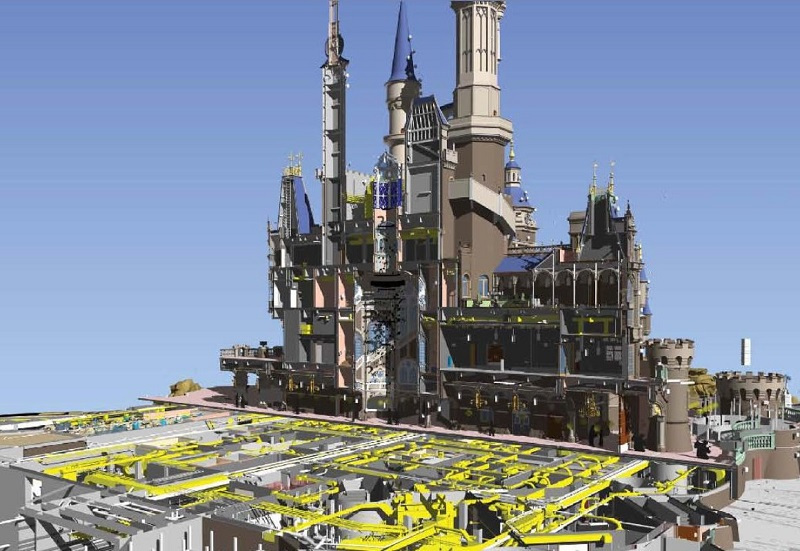

Client: Walt Disney Imagineering (WDI)
Location: Shanghai, China
Type: Amusement Park
Size:
Team: WDI, Shanghai Construction Group
Description:
Since 2011, GT has partnered with Walt Disney Imagineering to help develop comprehensive, BIM driven strategies for its event design and construction.
In 2014 Walt Disney Imagineering along with Gehry Technologies were honored with the 2014 AIA Technology and Architectural Practice Award for BIM Process Advancement.
Highlights: